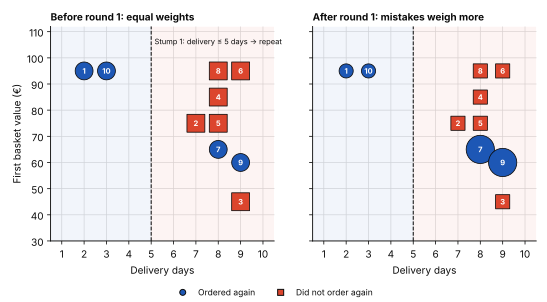
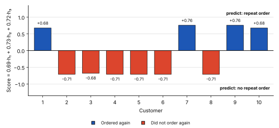

Tree-based models
AdaBoost Explained: How Models Learn from Their Mistakes
A single decision tree is often too simple to make reliable predictions. AdaBoost, short for Adaptive Boosting, takes a different approach: it combines many simple models into one stronger model.
The idea is straightforward. Each new tree focuses more on the observations that previous trees classified incorrectly. By repeatedly adjusting which observations matter most, AdaBoost gradually improves its predictions.
In this tutorial, we will work through the algorithm using ten fictional customers of an online shop. Our task is to predict whether a customer will place another order within 60 days. By the end, you will also implement AdaBoost in Python.
This is the first article in a three-part series on boosting. For a broader introduction, see Boosting: Learning from the Mistakes of Previous Trees. If you are new to decision trees, start with Decision Trees.
In this article
The Setup: Stumps and Ten Customers
Weak Learners and Decision Stumps
A weak learner is a model that performs only slightly better than random guessing. AdaBoost typically uses a very simple decision tree called a decision stump.
A decision stump is a tree with just one question and two possible outcomes. For example: Was the order delivered within five days?
- Yes: predict that the customer will order again.
- No: predict that the customer will not order again.
That is the entire model. It makes a prediction based on just one feature.
A stump is deliberately simple. Consider the full dataset of 5,000 simulated customers used in this series. The best individual stump uses delivery time but still predicts “no repeat order” for every customer. It correctly classifies only 63.4% of the test customers, no better than simply predicting the majority class. On its own, this stump has limited predictive value.
AdaBoost makes these simple models useful by combining them. It does this through two mechanisms:
- Sample weights: Each customer receives a weight indicating how much attention the algorithm should pay to that observation. Incorrectly classified customers receive more weight, making them more important in the next round.
- Model weights: Each stump receives a weight (its influence) based on its classification performance. More accurate stumps have a greater influence on the final prediction.
The result is a sequence of simple models, each learning from the mistakes of its predecessors.
Ten Customers with Equal Weights
Let’s start with our ten fictional customers. Chart 1 shows each customer as a point:
- The x-axis represents delivery time in days.
- The y-axis represents the value of the customer’s first basket in euros.
- Blue circles indicate customers who ordered again within 60 days.
- Red squares indicate customers who did not order again.
Two customers stand out: customers 7 and 9. Both waited longer than five days for delivery but still placed another order.

Before AdaBoost trains its first stump, all ten customers have equal importance. Each observation receives a sample weight of:
wi = 110 = 0.10
Together, the weights add up to 1. This means every customer contributes equally to the learning process. The left panel of Chart 1 illustrates these initial weights: all ten markers have the same size.
Now let’s apply our first decision stump: Was the order delivered within five days? The stump predicts a repeat order for delivery times of five days or less and no repeat order for delivery times longer than five days. This rule correctly classifies eight customers but makes two mistakes: customers 7 and 9.
The right panel shows what happens next. AdaBoost increases the weights of these two incorrectly classified customers. Their markers become larger, while the weights of correctly classified customers become smaller.
Why does this matter? The next stump will pay more attention to customers 7 and 9. Instead of treating all observations equally, AdaBoost now encourages the next model to focus on the cases the previous model failed to explain. This is how the algorithm gradually learns from its mistakes.
Round 1: Error, Alpha and New Weights
1. Calculate the Weighted Error
Our first decision stump asks a simple question: Was the package delivered within five days?
- Yes → Predict a repeat order.
- No → Predict no repeat order.
The stump correctly classifies eight customers and makes two mistakes: customers 7 and 9.
But how do we measure how well the stump performs? AdaBoost calculates the weighted error, written as ε (epsilon). It is the sum of the sample weights belonging to incorrectly classified customers.
ε = ∑i=1n wi · I(yi ≠ h(xi))
Here, wi is the weight of customer i, and the indicator I equals 1 when the prediction is wrong and 0 when it is correct.
Before the first round, every customer has an equal weight of 0.10. Therefore:
ε = 0.10 + 0.10 = 0.20
The weighted error is 0.20, or 20%. In this first round, the weighted error is identical to the ordinary misclassification rate because all customers have equal weights. In later rounds, this changes. Misclassifying a customer with a high weight contributes more to the error than misclassifying one with a low weight.
The key idea: AdaBoost does not just count mistakes. It considers how important the incorrectly classified observations are.
2. Alpha: How Much Influence Does a Stump Get?
Not all decision stumps should have the same influence on the final prediction. A stump that classifies most customers correctly should have more say than one that makes many mistakes.
Each stump casts a vote for every customer:
- +1 → Predict a repeat order.
- −1 → Predict no repeat order.
Why +1 and −1 instead of 1 and 0?
In the data table, repeat order is coded 1 and no repeat order 0. AdaBoost’s formulas use −1 and +1 instead, because the product y · h(x) then tells us directly whether a prediction is correct: +1 for a correct prediction, −1 for a wrong one. Both codings describe the same outcomes: 0 simply becomes −1.
But how much should we trust that vote? AdaBoost measures the influence of each stump using a value called alpha (α), also known as the stump’s weight.
- A highly accurate stump receives a high positive alpha and has more influence on the final prediction.
- A stump that performs no better than random guessing receives an alpha of zero and contributes nothing.
- A stump that performs worse than random guessing receives a negative alpha.
Let’s calculate alpha for our first stump. We already know its weighted error is 0.20. AdaBoost calculates alpha using:
α = 12 × ln(1 − εε)
Substituting our error rate:
α = 12 × ln(0.800.20)
α = 12 × ln(4) ≈ 0.69
Our first stump receives an alpha of approximately 0.69.
What does this formula tell us?
The fraction compares the weight of correctly classified customers with the weight of incorrectly classified customers. In our example, 80% of the total weight is classified correctly and 20% incorrectly. The ratio is therefore 4:1. The natural logarithm transforms this ratio into a score that determines the stump’s influence:
- Alpha = 0: The stump performs no better than random guessing.
- Positive alpha: The stump performs better than random guessing.
- Higher alpha: The stump has a greater influence on the final prediction.
- Negative alpha: The stump performs worse than random guessing.
Chart 2 shows how a stump’s influence depends on its weighted error. The smaller the error, the higher its alpha and the more influence it has on the final prediction. When the error reaches 0.5, alpha becomes zero: the stump performs no better than random guessing. If the error exceeds 0.5, alpha becomes negative, meaning the stump performs worse than guessing and its vote is effectively reversed.

But why does the formula contain a factor of ½?
This comes from the mathematical optimization behind AdaBoost. The algorithm chooses alpha to minimize the exponential loss of the combined model. The factor of ½ is part of this derivation and determines how strongly the sample weights are adjusted.
This brings us to the next step: updating the weights of our ten customers.
3. Why Does AdaBoost Use Exponential Weight Updates?
After the first stump, we want to change the importance of each customer.
- Customers classified incorrectly should receive more weight.
- Customers classified correctly should receive less weight.
The adjustment must also depend on how influential the stump is. A more accurate stump should produce a stronger adjustment.
AdaBoost achieves this using the exponential function ex. The function has exactly the properties we need:
- It is always positive, so weights can never become negative.
- It equals 1 when the exponent is zero, meaning no adjustment takes place.
- It is greater than 1 for positive exponents.
- It is between 0 and 1 for negative exponents.
AdaBoost therefore uses two multipliers:
- Incorrect prediction: Multiply the old weight by eα.
- Correct prediction: Multiply the old weight by e−α.
We can express both cases in one formula:
winew = wiold × e−α · yi · h(xi)
Here:
- wiold = the customer’s previous weight.
- α = the stump’s influence.
- yi = the customer’s actual outcome (+1 or −1).
- h(xi) = the stump’s prediction (+1 or −1).
The product yi h(xi) determines whether the prediction is correct:
- Correct prediction: yi h(xi) = +1, resulting in e−α.
- Incorrect prediction: yi h(xi) = −1, resulting in eα.
Let’s apply this to our first stump. We calculated alpha as approximately 0.69. The two multipliers are:
e0.69 ≈ 2
e−0.69 ≈ 0.5
This means that incorrectly classified customers have their weights doubled, while correctly classified customers have their weights halved.
Notice what happens to the total weight:
- The two incorrectly classified customers initially carry a combined weight of 2 × 0.10 = 0.20. After doubling, their combined weight becomes 0.20 × 2 = 0.40.
- The eight correctly classified customers initially carry a combined weight of 8 × 0.10 = 0.80. After halving, their combined weight also becomes 0.80 × 0.5 = 0.40.
Both groups now carry the same total weight. This is not a coincidence. The alpha formula is designed so that, after the update, the correctly and incorrectly classified groups have equal total weight before normalization.
Consequently, the first stump’s weighted error becomes 0.50 under the updated weights. Repeating the same stump would therefore provide no advantage to the next round. The next stump must find a different rule that can better distinguish the customers the first stump got wrong.
4. Updating and Normalizing the Weights
Let’s calculate the new weights for each customer.
Customers 7 and 9 (incorrectly classified): Their original weight was 0.10. Since the stump got them wrong, we multiply their weights by 2:
0.10 × 2 = 0.20
The other eight customers (correctly classified): Their original weight was also 0.10. Since the stump got them right, we multiply their weights by 0.5:
0.10 × 0.5 = 0.05
We now have:
| Customer group | Number | New weight per customer |
|---|---|---|
| Misclassified (7, 9) | 2 | 0.20 |
| Correctly classified | 8 | 0.05 |
However, these new weights do not add up to 1. To see this, add up all ten weights: the two misclassified customers contribute 2 × 0.20 = 0.40, and the eight correctly classified customers contribute 8 × 0.05 = 0.40. The total is 0.80, not 1:
2 × 0.20 + 8 × 0.05 = 0.80
We want the weights to represent shares of a whole, so they must add up to 1 again. This process is called normalization. We simply divide every new weight by the sum of all new weights:
winormalized = winew∑j=1n wjnew
For customers 7 and 9:
0.200.80 = 0.25
For each of the other eight customers:
0.050.80 = 0.0625
Our final weights after Round 1 are:
| Customer group | Number | Normalized weight |
|---|---|---|
| Misclassified (7, 9) | 2 | 0.25 |
| Correctly classified | 8 | 0.0625 |
Let’s check that the weights add up to 1:
2 × 0.25 + 8 × 0.0625 = 1
What has changed?
Before Round 1, every customer had the same weight of 0.10. After Round 1, customers 7 and 9 each carry a weight of 0.25, while the other customers each carry only 0.0625. The two customers the first stump misclassified now account for 50% of the total weight, even though they represent only 20% of the dataset.
This is the central idea behind AdaBoost: each new stump pays more attention to the observations that previous stumps struggled to classify. The updated weights become the starting point for Round 2.
Rounds 2 and 3: Learning from New Mistakes
The first stump has finished its job. We now have updated sample weights, with customers 7 and 9 carrying more importance than the others.
Round 2 starts with these new weights. The algorithm looks for another decision stump, but this time it evaluates potential questions using the updated weights.
Round 2: A Different Question
The best stump now asks:
Was the first basket worth €70 or less?
- Yes → Predict a repeat order.
- No → Predict no repeat order.
This stump correctly classifies customers 7 and 9, the two customers the first stump got wrong.
However, it makes three mistakes: customers 1, 3 and 10. These are customers the first stump classified correctly.
Their weights are now relatively small, at 0.0625 each. Therefore, the weighted error is:
ε = 3 × 0.0625 = 0.1875
Notice something interesting: the stump makes three mistakes instead of two, but its weighted error is lower than in Round 1.
This is because AdaBoost no longer treats every customer equally. The three mistakes involve customers with relatively small weights, while the stump correctly classifies the two customers with higher weights.
We calculate its influence:
α = 12 × ln(1 − 0.18750.1875)
α = 12 × ln(0.81250.1875) ≈ 0.73
The second stump receives an alpha of approximately 0.73, slightly higher than the first stump’s 0.69.
After updating and normalizing the weights again, the importance shifts towards customers 1, 3 and 10.
Their weights now increase to approximately 0.17 each. Customers 7 and 9 retain weights of approximately 0.15 each, while the other five customers have weights of approximately 0.04 each.
Where does 1/26 ≈ 0.0385 come from?
After Round 2, the seven customers the stump got right (customers 2, 4, 5, 6, 7, 8 and 9) carry exactly half of the total weight, so 0.5 together.
They share this 0.5 in the same proportions as before. Customers 7 and 9 had 0.25 each, and the other five had 0.0625 each. Since 0.25 is four times 0.0625, customers 7 and 9 count as 4 units each and the other five as 1 unit each:
2 × 4 + 5 × 1 = 13 units
One unit is therefore worth 0.5 ÷ 13 = 1/26 ≈ 0.0385. This is the weight of each of the five lightest customers. Customers 7 and 9 have 4 units, so 4/26 ≈ 0.15.
The algorithm has shifted its attention again. The first stump struggled with customers 7 and 9; the second stump struggles with customers 1, 3 and 10.
Round 3: A Third Question
Round 3 follows the same procedure.
The third stump asks:
Was the first basket worth more than €52.50?
This stump makes five mistakes: customers 2, 4, 5, 6 and 8. These are exactly the five customers with the smallest weights after Round 2, about 0.04 each. More precisely, each of them carries a weight of 1/26 ≈ 0.0385, so the weighted error is:
ε = 5 × 0.0385 ≈ 0.19
Its influence is therefore:
α = 12 × ln(1 − 0.190.19) ≈ 0.72
The third stump receives an alpha of approximately 0.72.
Here is an important observation: this stump correctly classifies only five out of ten customers. Looking at ordinary accuracy alone, it appears no better than random guessing.
However, its weighted error is only 0.19.
Why?
Because it correctly classifies the customers that carry more weight. The five mistakes involve observations with relatively little weight, so they contribute less to the total error.
This illustrates why ordinary accuracy does not tell the whole story in AdaBoost. What matters is not just how many customers a stump classifies correctly, but how important those customers are to the algorithm.
How the Sample Weights Change Across Three Rounds
Chart 3 brings the three rounds together.
It shows how the importance of each customer changes throughout the learning process:
- Initially: All ten customers have an equal weight of 0.10.
- After Round 1: Customers 7 and 9 receive the highest weights because the first stump misclassified them.
- After Round 2: Customers 1, 3 and 10 receive higher weights because the second stump misclassified them.
- After Round 3: The weights become more evenly distributed again.

The important takeaway is that the algorithm continuously shifts its attention towards observations that previous stumps struggled to classify.
Three Stumps, Three Different Questions
Let’s put the three stumps side by side:
| Stump | Question | Weighted error (ε) | Alpha (α) |
|---|---|---|---|
| 1 | Delivery within 5 days? | 0.20 | 0.69 |
| 2 | First basket ≤ €70? | 0.1875 | 0.73 |
| 3 | First basket > €52.50? | 0.19 | 0.72 |
Each stump uses a different question and makes mistakes on different customers.
None of the stumps is particularly impressive on its own. But together, they can capture patterns that a single simple decision rule would miss.
Weighted Voting: How AdaBoost Makes Its Final Prediction
We now have three decision stumps, each with its own alpha.
How does AdaBoost combine their predictions?
It uses a weighted vote.
Each stump predicts either:
- +1 → Repeat order.
- −1 → No repeat order.
However, their votes do not count equally. Each prediction is multiplied by the stump’s alpha.
The final score for a customer is:
F(x) = α1 h1(x) + α2 h2(x) + α3 h3(x)
Using our three stumps:
F(x) = 0.69 h1(x) + 0.73 h2(x) + 0.72 h3(x)
The sign of the final score determines the prediction:
- Positive score → Predict a repeat order.
- Negative score → Predict no repeat order.
Let’s look at two customers.
Example 1: Customer 7
Customer 7 waited 8 days for delivery and had a first basket worth €65. The actual outcome was a repeat order.
The three stumps vote:
| Stump | Prediction | Weighted vote |
|---|---|---|
| 1 | −1 | −0.69 |
| 2 | +1 | +0.73 |
| 3 | +1 | +0.72 |
The final score is:
F(x) = −0.69 + 0.73 + 0.72 = +0.76
The score is positive, so the model predicts a repeat order.
The prediction is correct.
Example 2: Customer 3
Customer 3 waited 9 days for delivery and had a first basket worth €45. The actual outcome was no repeat order.
The three stumps vote:
| Stump | Prediction | Weighted vote |
|---|---|---|
| 1 | −1 | −0.69 |
| 2 | +1 | +0.73 |
| 3 | −1 | −0.72 |
The final score is:
F(x) = −0.69 + 0.73 − 0.72 = −0.68
The score is negative, so the model predicts no repeat order.
The prediction is correct.
The Final Predictions
Chart 5 shows the final scores for all ten customers.
Customers 1, 7, 9 and 10, who actually ordered again, have positive scores. The remaining six customers have negative scores.
All ten customers are classified correctly by the combined model.

This is the strength of AdaBoost: a stump does not need to be highly accurate on its own. By combining several weak learners, each focusing on different mistakes, the algorithm can build a much stronger model.
However, there is an important limitation to remember. These ten customers are the training observations used to build the model. Getting all ten predictions right does not mean the model will perform equally well on new customers.
In practice, AdaBoost combines many more decision stumps and must be evaluated on unseen data to determine how well it generalizes.
In the next section, we will implement AdaBoost in Python and see how the algorithm works beyond our small example.
AdaBoost in Python
From scratch on the ten customers
The code below repeats exactly what we did by hand. In every round it tries every question of the form “feature ≤ threshold” and picks the one with the smallest weighted error. It then calculates α, updates the weights and normalizes them.
import numpy as np
days = np.array([2, 7, 9, 8, 8, 9, 8, 8, 9, 3])
basket = np.array([95, 75, 45, 85, 75, 95, 65, 95, 60, 95])
y = np.array([1, -1, -1, -1, -1, -1, 1, -1, 1, 1]) # +1 = ordered again
X = np.column_stack([days, basket])
names = ["delivery days", "first basket"]
w = np.full(10, 0.1) # each customer starts with 0.10
stumps = []
for round_no in range(1, 4):
best = None
for f in range(2): # try both features
values = np.unique(X[:, f])
for t in (values[:-1] + values[1:]) / 2: # thresholds in between
for sign in (1, -1): # which side predicts "repeat"
pred = np.where(X[:, f] <= t, sign, -sign)
eps = w[pred != y].sum() # weighted error
if best is None or eps < best[0] - 1e-12:
best = (eps, f, t, sign, pred)
eps, f, t, sign, pred = best
alpha = 0.5 * np.log((1 - eps) / eps) # the influence of the stump
w = w * np.exp(-alpha * y * pred) # wrong: x e^a, right: x e^-a
w = w / w.sum() # normalize: weights add up to 1
stumps.append((alpha, f, t, sign))
print(f"Round {round_no}: {names[f]} <= {t}",
f"eps={eps:.4f}", f"alpha={alpha:.4f}")
score = sum(a * np.where(X[:, f] <= t, s, -s) for a, f, t, s in stumps)
print("all correct:", (np.sign(score) == y).all())The output matches the hand calculation: round 1 asks about delivery days ≤ 5 with ε = 0.2000 and α = 0.6931, round 2 asks about a first basket ≤ 70 with ε = 0.1875 and α = 0.7332, round 3 asks about a first basket ≤ 52.5 with ε = 0.1923 and α = 0.7175, and all ten customers are classified correctly.
With scikit-learn on the full customer table
For real data you do not write the loop yourself. With the table prepared as in Random Forest: Why Many Trees Beat One (3,750 customers for training, 1,250 for testing), the model takes three lines. By default, AdaBoostClassifier uses stumps as weak learners.
from sklearn.ensemble import AdaBoostClassifier
from sklearn.metrics import roc_auc_score
ada = AdaBoostClassifier(n_estimators=50, random_state=42) # 50 stumps
ada.fit(X_train, y_train)
print("accuracy:", ada.score(X_test, y_test))
proba = ada.predict_proba(X_test)[:, 1]
print("AUC:", roc_auc_score(y_test, proba))With 50 stumps the model reaches an accuracy of 78.3% and an AUC of 0.837 on the test customers, against 63.4% for always predicting “no repeat order”. The AUC is a score from 0.5 (guessing) to 1 (perfect) that rates how well the model ranks the customers who will order again above those who will not. More stumps are not automatically better:
| Number of stumps | Test accuracy | AUC |
|---|---|---|
| 1 | 63.4% | 0.500 |
| 10 | 79.1% | 0.832 |
| 50 | 78.3% | 0.837 |
| 500 | 78.6% | 0.836 |
Most of the gain arrives with the first ten stumps. After that, accuracy and AUC hardly move on this table. The setting learning_rate (default 1.0) shrinks the say of every stump, which makes learning slower and usually needs more stumps.
If you print ada.estimator_weights_ for the ten customers, you get 1.39, 1.47 and 1.44, exactly twice our 0.69, 0.73 and 0.72. scikit-learn leaves out the factor ½. The weighted errors are identical (0.20, 0.1875, 0.1923) and so are the predictions, because doubling every say changes no sign and the weight update ends up the same.
Strengths and Limits
AdaBoost is easy to understand and has few settings. It works with any model that can handle weights, and in practice a small number of stumps is often enough. Its weak spot follows from the way it works: a customer who keeps being predicted wrongly keeps gaining weight. If that customer is not a pattern but just noise, for example a wrong label or a one-off order, the stumps start to bend toward that customer. A second limit is that the stumps are built one after another, so they cannot be trained in parallel like the trees of a random forest.
The next article looks at gradient boosting, which corrects mistakes differently: instead of reweighting customers, it measures each mistake directly. The two methods are closer than they look. AdaBoost can be seen as gradient boosting with a particular way of measuring the error, the exponential loss.
Frequently Asked Questions
What is the difference between a weak learner and a strong learner?
A weak learner is only slightly better than guessing, like a single stump. A strong learner is accurate on its own. AdaBoost combines many weak learners into one strong one.
Why is AdaBoost called adaptive?
Each new stump adapts to the mistakes of the earlier ones. The weights of the customers that were predicted wrongly go up, so the next stump is trained on a problem that has changed.
Does AdaBoost only work with stumps?
No. Any model that can work with sample weights can be used, for example a decision tree with two or three levels. Stumps are the default because they are fast and hard to overfit.
Is AdaBoost better than gradient boosting?
Not in general. On our customer table AdaBoost reaches 78.3% accuracy and an AUC of 0.837, gradient boosting 79.4% and 0.865. Gradient boosting is more flexible and is what libraries such as XGBoost build on, while AdaBoost is the simplest way to see boosting at work.
Key takeaway
AdaBoost builds one-question trees (stumps) in a row. After each stump, it multiplies the weight of every customer it got wrong by eα and every customer it got right by e−α, then normalizes, so the next stump has to care about the earlier mistakes. The final prediction is a vote in which each stump’s answer counts as much as its say α, which grows as its weighted error ε shrinks.
Related posts
- Boosting: Learning from the Mistakes of Previous Trees The overview of AdaBoost, gradient boosting and XGBoost.
- Decision Trees: Splitting Data into Clear Decisions The trees that stumps are made from.
- Random Forest: Why Many Trees Beat One The other way to combine many trees.